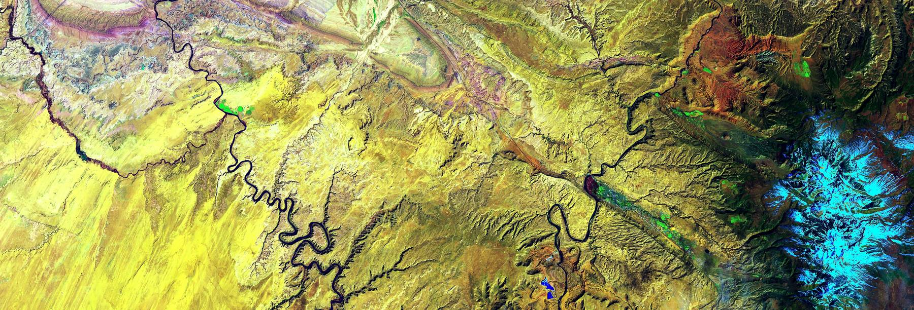
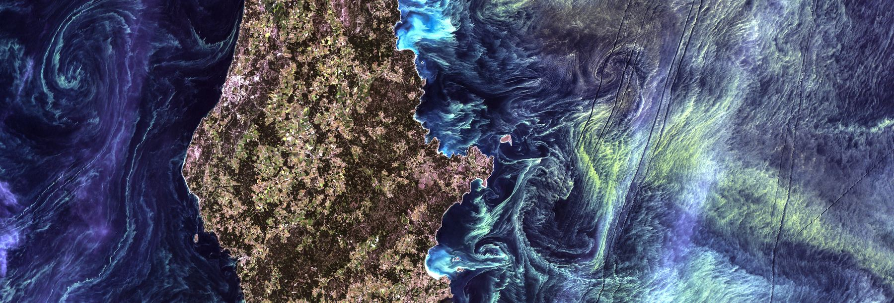

First principles
Matter does not leave.
Every ton a process takes in leaves again — as product, as emission, as heat, as something buried. Physics has said so since 1789. What was invented was the accounting treatment. Almost everything built since industrialization was designed on that price, which is why almost everything has to be redesigned.
Contents
Seventeen sections. Read them in any order.
This page is a position, not a survey. It sets out how this practice sees the world and why the instruments are built the way they are: the physics we take as binding, the economics we underwrite from, and the evidence behind both. The lineage and the references are not exhaustive and are not meant to be. They are what the argument rests on, published so it can be checked and argued with rather than taken on trust.
01
The false price
The law was never in doubt. The price was.
In 1789 Antoine Lavoisier established that matter is neither created nor destroyed in a chemical reaction: what goes in comes out, in the same quantity, rearranged. Einstein’s 1905 result extended the principle rather than replacing it — mass and energy are interchangeable, and the total is conserved.
Applied to an economy, that has one unavoidable consequence. Every ton of material a process takes in leaves it again, as product, as emission, as effluent, as heat, as something buried. There is no “away”. A second law of thermodynamics argument completes it: the energy that did the work is degraded in doing it, so putting the material back where it came from always costs more than letting it out.
Neither law was hidden. Both were known long before the industrial economy was designed, and the economy was designed as though neither applied.
This was said to economists in 1969, in their own journal. Robert Ayres and Allen Kneese built Production, Consumption, and Externalities on what they called the fundamental law of conservation of mass, and drew the conclusion that follows from it: externalities are not occasional failures at the edges of otherwise efficient markets. They are normal, pervasive and inherent in production, because the mass balance requires them. A price that omits them is not a slightly imperfect price. It is the wrong number.
That is the false price the practice exists because of. For two centuries we designed, engineered and financed the physical world on it: materials, buildings, process heat, transport, agriculture, the cities themselves. Every one of those decisions was optimized against a cost base that left out what the physics guaranteed would happen.
The claim
Said once, plainly.
No ecology, no economy. Nature is not a resource with no owner. It is the infrastructure every business runs on, and the only infrastructure never carried at cost.
02
The biosphere behaves like a system
If the atmosphere is regulated, it can be destabilized.
In 1974 James Lovelock and Lynn Margulis published the Gaia hypothesis in Tellus: the Earth’s atmosphere is not a passive backdrop but a system held far from chemical equilibrium by the biosphere itself. Oxygen at 21%, methane co-existing with it, surface temperature stable across billions of years of rising solar output — none of that is what a dead planet’s chemistry produces.
The hypothesis attracted a serious objection, and it is worth stating rather than skipping: critics argued that it implied purpose, since natural selection acts on organisms rather than on planets. Lovelock’s reply was a model, Daisyworld, showing that regulation can emerge from ordinary competition with no foresight at all.
What survived is the part that matters here. The idea that the Earth is a coupled system of biological, chemical and physical processes with feedbacks — that it can be measured, modeled and pushed — became Earth system science. Planetary boundaries are its descendant, which is why section 05 can state how many of the nine have been crossed rather than argue about whether limits exist.
For an allocator the consequence is narrow and practical. A regulated system has operating ranges, and processes that hold it there can weaken. Those feedbacks are the infrastructure under every asset in a portfolio, and they are the part no balance sheet records.
03
If the price was wrong, the design was wrong
Everything built on it has to be redesigned.
If the price was wrong, then the design was wrong, because design follows price. Almost everything engineered since industrialization was built for a one-way trip: extract, make, use, discard, and let the mass balance land on someone else’s ledger.
Redesigning it is the largest re-engineering program in history. It is already specified — this is not a call for one:
- Loop it. Walter Stahel and Geneviève Reday’s 1976 report to the European Commission set out an economy in loops: reuse, repair, remanufacture. It is the origin of what is now called the circular economy, and it was a labor and energy argument before it was an environmental one.
- Design waste out at the drawing board. William McDonough and Michael Braungart’s Cradle to Cradle (2002) argues that waste is a design failure rather than an inevitability, and that “less bad” is not good — a product should be designed so its materials have a next life, biological or technical.
- Take the brief from living systems. Janine Benyus’s Biomimicry (1997) reads nature as 3.8 billion years of tested engineering. John Tillman Lyle’s Regenerative Design for Sustainable Development (1994) makes it a design discipline: systems that restore their own sources.
- Account for it as metabolism. Industrial ecology treats an economy as a flow of materials and energy that can be measured, which is the practical descendant of the Ayres and Kneese mass balance.
Fuller’s version of the same law
Buckminster Fuller put conservation of mass to designers as an instruction rather than a constraint. In LIFE magazine in 1971 he is quoted as saying that pollution is merely a resource that isn’t being used properly. The better-known phrasing — pollution is nothing but the resources we are not harvesting; we allow them to disperse because we’ve been ignorant of their value — circulates everywhere and appears in no primary source we could verify, so we use the citable version and say why.
Either way the content is Lavoisier’s, turned toward design: if the mass does not leave, waste is not a category of matter. It is a category of accounting and design failure, and the engineering question is what the material is for next.
Tensegrity, used as an analogy and labeled as one
Fuller named tensegrity — tensional integrity — for structures whose compression members do not touch: isolated struts suspended in a continuous net of tension, which the sculptor Kenneth Snelson had built first. The structural point is that stability can come from distributed tension rather than from mass and compression. (Fuller’s geodesic domes are a different achievement, load distributed through a triangulated shell. The two are often conflated, and we should not conflate them.)
As an analogy, and only as an analogy, it says something exact about what is being rebuilt. The industrial economy was built in compression: heavier structures, larger throughput, more mass moved to hold the system up, and the failures deferred to whatever lay underneath. A regenerative economy holds its shape a different way — through loops, feedbacks, contracts and information that carry tension across the whole rather than piling mass at one point. It is lighter, it is more connected, and it fails differently: cut one tension member and the whole net slackens, which is what a transgressed planetary boundary looks like.
We use that picture to explain the shape of the work. We do not use it as evidence. The evidence is in section 01, section 05 and section 06.
What it will take to finance
The result is a redesign of the physical economy that will not be financed by sentiment. It will be financed one position at a time, by people deciding whether a specific company, with a specific technology, can reach a specific buyer before the money runs out. That decision is where the money is lost, and it is where we work.
04
What new materials change
Architecture, not chemistry — and the conservation laws do not move.
This section exists because a bench specialist read the draft and pushed back, and the push-back was right.
The substantive point
For most of industrial history, a material’s properties came from what it was made of. Steel behaves like steel because of its chemistry. That constraint is what made the redesign in section 03 look like a chemistry problem.
Architected materials — metamaterials — break that assumption. Their behavior comes from geometry and topology at a scale below the part, which is why the field describes them as deriving function from structure rather than composition. The consequences are real and already demonstrated: negative Poisson’s ratio, materials that contract when heated, mechanical cloaking, programmable stiffness that can be switched electrically, and lattices tuned to trap or steer energy.
A composite built from two ordinary positive-expansion materials can be architected to have negative or near-zero thermal expansion — a property neither constituent possesses. That is a genuine expansion of what can be built, and it matters for exactly the things this practice assesses: structures that do not move with temperature, batteries and enclosures that survive cycling, isolation that is directional.
The correction that has to travel with it
The paper behind the claim describes mechanical metamaterials that go beyond Newton’s third law of motion — the rule that every action has an equal and opposite reaction — not the third law of thermodynamics, which concerns entropy as temperature approaches absolute zero. The two are unrelated, and the source’s own title says Newton.
It matters for a second reason. In those systems the non-reciprocity is produced by active feedback control: a controller sits over each mass, measures its neighbors, and actuates. The physics literature is explicit that a material violating this kind of reciprocity must be dissipative, driven or active — it needs an energy source or a momentum sink. Active metamaterials work because they carry local reservoirs of energy, which is precisely why they can do what passive, energy-conserving materials cannot.
So nothing here repeals conservation of mass or the laws of thermodynamics. The energy is still paid for. What changes is the menu of behaviors available to a designer who is willing to pay for it, and that menu is now much longer than chemistry alone allowed.
Why this is an opportunity, and for whom
- A new category exists that is genuinely early. Most of this work sits between laboratory demonstration and manufacturable part. That is the position where a technically literate allocator can take a real position before the category is priced — and it is the exact stage where our assessment is built to operate.
- It widens the redesign in section 03. If waste is a design failure, architected materials give designers a second lever: change the geometry rather than the chemistry. Zero-expansion structures, self-isolating assemblies, lattices that recover energy, and components made from fewer material classes are all easier to keep in a loop.
- The constraints are manufacturing, durability and power. A lattice that performs in a lab at centimeter scale may not survive fabrication, fatigue or twenty years of weather, and an active material stops behaving when its power does. Those are the questions, and they are ordinary technical readiness questions.
The diligence rule it produces
A claim that a material “beats” a physical limit is the oldest pitch in the sector, and it is now easier to make because the vocabulary is unfamiliar. Three questions separate the real thing from the pitch, and they will be added to the technical readiness scoring notes:
- Which law is actually being invoked? Newton’s third law, Maxwell-Betti reciprocity, and the laws of thermodynamics are different claims. A team that cannot say which one is describing a result it does not understand — and we caught exactly that confusion in a secondary source while writing this section.
- Where does the energy come from? If the behavior requires activity, there is a power budget, a controller, a failure mode and an operating cost. If a team claims the behavior is passive and free, that is a finding.
- What survives scale-up? The property has to persist through manufacturing tolerances, fatigue and field conditions, not only in the demonstration cell.
Credit where it belongs. This section exists because Lawrence Culliford read a draft and said the argument as written was true for naturally occurring chemistry and incomplete for engineered composites. That is what the bench is for, and it is why the review happens before publication rather than after.
05
Why this is now a pricing question
The costs are moving onto balance sheets, on a schedule you can date.
The argument stopped being philosophical when the costs began moving onto balance sheets. Four things happened.
| What changed | Why it matters to an allocator | |
|---|---|---|
| The dependency was quantified | The World Economic Forum put $44 trillion of economic value generation — over half of global GDP — as moderately or highly dependent on nature; PwC restated it at $58 trillion in 2023 | The exposure is not a niche. It is most of the economy |
| The depletion was measured | The Dasgupta Review, commissioned by the UK Treasury, found that from 1992 to 2014 produced capital per person doubled while natural capital per person fell by nearly 40%, and argued that GDP is unfit to judge economic health because it ignores the depreciation of the biosphere | The growth was partly a transfer from an unrecorded asset |
| The accounting was standardized | Ecosystem accounting became a UN statistical standard in 2021, so natural capital can be recorded in national accounts rather than argued about | What can be measured can be priced |
| The disclosure arrived | TNFD published its recommendations in 2023; by November 2025 733 organizations with over $22 trillion in assets had adopted them, and the ISSB is building nature standards from TNFD with an exposure draft targeted for October 2026 | Disclosure precedes pricing, and pricing precedes repricing |
Meanwhile the physical trend has not turned. The planetary boundaries framework quantified nine Earth-system limits; the 2023 assessment found six transgressed, and the 2025 Planetary Health Check made it seven of nine, adding ocean acidification, with all seven worsening.
The conclusion we underwrite from: a company that carries its environmental and human costs early is the cheaper company to own later, because the repricing is arriving on a schedule that can now be dated. That is the screen, stated as arithmetic.
On ethics, said plainly
An earlier version of this argument headed this section why this is a pricing question, not a moral one. That was wrong, and the correction belongs in the open rather than in a quiet edit.
The thesis is ethical and biological at its root. A system that takes what it does not pay for, from people who did not agree to give it, is doing something wrong. A species degrading the conditions of its own life is doing something foolish as well as wrong. Neither statement becomes less true for being unpriced.
We lead with economics because economics can be checked. Physics, chemistry, biology, earth science and economics can all be argued with on evidence. A moral claim, argued directly in an investment committee, converts the conversation into a contest of beliefs, and the party with the unpriced cost wins that contest by default — because belief is exactly what they can decline to share. Stated as arithmetic, the same conclusion has to be answered on its merits.
So the order is deliberate, and it is not a dodge. The ethics are the reason; the economics are the instrument. We are not neutral about who ends up paying, and we will say so. We do not argue theology, we take no religious position, and we do not ask a client to adopt one. We do insist on one thing: somebody else pays for it is not a neutral accounting choice, and a practice that grades evidence should be the last place that pretends otherwise.
06
Valuing nature as nature
The question is not what a forest is worth when converted.
The false price has a second half. The first is that waste was treated as free. The second is that nature left intact was treated as worth nothing — a stock with no return until it is cut, drilled or cleared.
The economics already exists
John Krutilla broke that assumption in 1967, in Conservation Reconsidered, published in the American Economic Review one year before the Wild and Scenic Rivers Act. His argument was that development comes at the opportunity cost of preservation, and that cost-benefit analysis as then practiced was structurally biased toward development because it counted only the first. He introduced what became existence value — that people hold value for a thing that continues to exist, whether or not they ever use it — and he made the decisive point about irreversibility: a dam can be removed, a canyon cannot be rebuilt, and the technology that makes the development valuable will probably improve while the asset destroyed will not be replaced. He then applied it with Charles Cicchetti and Anthony Fisher to the case for preserving Hells Canyon on the Snake River.
Three ideas descend from it, and all three are underwriting ideas rather than environmental ones:
- Option value — what it is worth to keep a choice open when the future is uncertain (Weisbrod, 1964).
- Quasi-option value — the value of delaying an irreversible decision until better information arrives (Arrow and Fisher, 1974).
- Irreversibility — an asymmetry that ordinary discounting handles badly, because the loss is permanent while the gain is not.
Any allocator recognizes these. They are the language of real options, and they were applied to landscapes twenty years before they were applied to venture portfolios.
The standing-forest comparison
The same argument was made empirically in 1989, when Charles Peters, Alwyn Gentry and Robert Mendelsohn valued one hectare of Amazon forest at Rio Nanay in Peru three ways and published it in Nature. Sustainable harvest of fruit, latex and timber returned a net present value several times that of clearing the same hectare for cattle.
One hectare, Rio Nanay, Peru · net present value, 1989 US dollars
The 1989 study has been argued with for thirty-five years — over market saturation, transport costs, and whether one accessible hectare represents a basin — and the argument is healthy. What has not been overturned is the structure of the finding. Later work has extended rather than reversed it:
| Work | What it adds |
|---|---|
| Strand et al., Spatially explicit valuation of the Brazilian Amazon forest’s ecosystem services, Nature Sustainability (2018) | Values vary enormously by location, so a basin-wide average is the wrong instrument; the map is the instrument |
| Meta-analysis of thirty years of Brazilian valuation studies, PLOS ONE (2022) | Habitat, carbon, water regulation, recreation and ecotourism to local populations average roughly $410 per hectare per year, with a wide dispersion that the authors state plainly |
| Science Panel for the Amazon and the Amazônia 2030 program (2021 onward) | The standing-forest bioeconomy as an industrial strategy: açaí, Brazil nuts, cacao, oils and agroforestry, built with Indigenous and local knowledge rather than around it |
Why this belongs in a diligence practice
Four things follow, and each is something we assess rather than admire.
- The comparison is a discount-rate argument. Extraction pays now; a standing forest pays a smaller amount annually and indefinitely. Which wins depends entirely on the discount rate and the time horizon — the same variables that decide whether a climate position is early or wrong.
- Irreversibility belongs on the risk register. A converted forest, a drained aquifer, a collapsed fishery: the option is not recoverable at any price. That is not a moral claim, it is an asymmetry a risk register can carry.
- The people who live there are part of the economics, not a footnote. Food security, tenure and Indigenous knowledge are inputs to whether a standing-forest model produces anything at all, and a business case built without them is a business case that fails in the field.
- This is the same question as the rest of the practice. Who is compelled to pay for the forest standing, on what budget line, on what date? Where nobody is, it is a timing bet, and it should be sized as one — however good the argument is.
07
Private capital has been buying permanence
Conservation economics and the long horizon.
section 06 made the case that nature standing has value. A separate tradition went further and bought it — private money acquiring land at market prices and transferring it into permanent public protection.
Two examples, stated accurately
Grand Teton. From 1927, John D. Rockefeller Jr. acquired roughly 35,000 acres in Jackson Hole through the Snake River Land Company, a vehicle whose ownership was deliberately not disclosed so that prices would not move against it. He donated the land in 1949, and in 1950 Congress merged it with the existing park and the Jackson Hole National Monument to create Grand Teton as it stands. His son Laurance completed the family’s gift decades later: the JY Ranch became the Laurance S. Rockefeller Preserve, transferred in 2007, with a condition that the roads, buildings and utilities be removed and the land restored before the public was let in. (The Jackson Hole purchases were the father’s; the Preserve and its restoration condition were the son’s. The distinction is worth keeping straight.)
Patagonia. Douglas Tompkins, co-founder of The North Face and Esprit, began buying land in Chile in 1991, starting with what became Pumalín. With Kristine McDivitt Tompkins, former chief executive of Patagonia, Inc., they spent more than $345 million assembling and restoring land with the stated intention of giving it away. In January 2018, Tompkins Conservation transferred about 1 million acres to Chile; the government added roughly 9 million acres of federal land, creating five new national parks and expanding three others — more than 10 million acres, about three times Yosemite and Yellowstone combined — and forming the Route of Parks, a network of 17 parks across some 1,500 miles. Across Chile and Argentina the total protected with partners is on the order of 14 million acres.
The institutional form. What the Rockefellers and the Tompkinses did by hand is now an industry: land trusts, conservation easements, acquisition-and-transfer, and revolving funds, run at scale by organizations such as The Nature Conservancy and the Trust for Public Land. In the United States it sits alongside a public estate assembled over a century and a half — national parks from 1872, the Forest Service from 1905, and the public lands consolidated under the Bureau of Land Management.
What an allocator can actually take from this
- The exit was a transfer, not a sale. These positions were underwritten to a terminal value of zero and a public beneficiary. Knowing your exit is permanence changes every assumption about holding period, liquidity and governance — and it is a structure, not a sentiment.
- Restoration preceded transfer. Roads removed, buildings taken out, grasslands and forests brought back before handover. The asset was improved, on the buyer’s own money, before the buyer gave it away.
- Permanence had to be engineered. Easements, decrees, enabling legislation, endowments for maintenance. Without those instruments the protection lasts as long as the next owner’s intentions.
- Local opposition was the norm, not the exception. Both cases drew years of it. A project that moves a landscape moves the people on it, and a business case that ignores that is incomplete rather than merely impolite.
Why it belongs in this page
Because it is the clearest demonstration that the time horizon is a choice, not a constraint. A fund life is an institutional convention. A forest is not. Where a position’s value accrues over a century, the question is which vehicle can hold it — and allocators who can hold a longer clock, which is who this practice serves, are the ones for whom those positions are even legible.
08
The trade-off that never held
Environmental quality was supposed to cost growth.
The oldest argument against this whole agenda is that it is a tax on prosperity: cleaner means dearer, and regulation costs jobs. It has been tested.
It was contested from inside the labor movement. Environmentalists for Full Employment, founded in 1975 and directed by Richard Grossman, existed to challenge the claim that environmental protection destroyed jobs, publishing Jobs & Energy in 1977. The argument was completed in Fear at Work: Job Blackmail, Labor and the Environment (Kazis and Grossman, 1982), which documented how the threat of job loss was used to block protections rather than predict outcomes.
It was contested from inside business strategy. Michael Porter and Claas van der Linde argued in 1995 that well-designed environmental standards can trigger innovation that partially or fully offsets compliance costs — the Porter hypothesis. It remains argued over. What is not argued over is that the opposite claim, that standards straightforwardly destroy competitiveness, has never been established either.
And the cost curves moved. Lazard’s 2025 analysis puts utility-scale solar’s levelized cost down about 84% since 2009, and finds unsubsidized wind and solar the cheapest new-build generation in the United States for the tenth consecutive year, while gas-fired generation reached a ten-year high. IRENA reports utility-scale solar and onshore wind at roughly $40 per MWh globally in 2025, less than half the cost of new combined-cycle gas, and firm solar-plus-storage at $54–82 per MWh, down from over $100 in 2020.
What this means for the work
We do not underwrite a green premium, and we do not underwrite a green discount. Every assessment asks whether a cost case survives without a subsidy that may not be there in three years, because a company whose economics depend on the trade-off argument being resolved in its favor is carrying a policy bet it has not named. What the fifteen-year cost record does establish is narrower and more useful: the direction of travel is not a matter of belief, and a technology that is expensive today is not thereby expensive in 2032. That is a timing judgment, and timing is what we assess.
A practice that grades evidence does not quote only the favorable series.
- Wind got more expensive recently. Lazard’s 2025 report shows onshore wind’s range rising year over year on supply chain and equipment costs, even as solar edged down. The trend is not monotonic.
- Levelized cost is not system cost. LCOE omits firming, transmission and curtailment. That is why the firm solar-plus-storage figure matters more than the headline, and why it is still above the headline number.
- Cheap generation is not a cheap transition. Grid buildout, permitting and interconnection are where first-of-a-kind projects actually stall, which is section 06’s discount-rate problem wearing a hard hat.
09
The Sustainable Development Goals
Where we align, and where we do not.
The practice states alignment to the UN Sustainable Development Goals on its site, and alignment is a claim that should be specific enough to be checked.
Where the work lands
| Goal | How the practice touches it |
|---|---|
| 6 · Clean water and sanitation · 14 · Life below water | Water infrastructure, treatment, remediation and allocation is one of our named sectors, and the least substitutable risk in the stack |
| 7 · Affordable and clean energy · 13 · Climate action | Generation, storage and grid, including the load growth the compute build-out created; every assessment scores whether a cost case survives without a subsidy that may not be there in three years |
| 9 · Industry, innovation and infrastructure · 12 · Responsible consumption and production | Industrial decarbonization, waste-to-value and materials: the redesign in section 03, assessed one company at a time |
| 11 · Sustainable cities and communities | Real assets and the built environment: retrofit, urban systems, first-of-a-kind development |
| 2 · Zero hunger · 15 · Life on land | Food and agriculture, soil and water integrity, small-hold economics, and the standing-forest economics in section 06 |
| 8 · Decent work and economic growth · 17 · Partnerships for the goals | How the work is delivered: a bench paid properly, a method released on request, and findings that belong to whoever commissioned them |
The number that makes this a capital question
Ten years after the Goals were adopted, the UN’s 2025 report found about a third of targets on track or progressing moderately, and put the annual financing gap for developing countries at $4 trillion — up from an estimated $2.5 trillion in 2015, and projected to reach $6.4 trillion by 2030 without reform. Development assistance is falling, not rising.
A gap that size will not be closed by aid. It will be closed, if at all, by private capital that can tell a fundable project from an unfundable one in exactly the places where the evidence is thinnest. That is this practice’s work, stated at the scale of a development agenda rather than a deal.
What we do not claim
- We do not certify, score or audit SDG contribution, and we are not an impact-measurement provider.
- We do not report against SDG indicators on a client’s behalf.
- We do not use the Goals as a marketing frame for a company whose economics do not work. A company that cannot reach a compelled buyer advances no Goal, however well it maps to one.
Alignment means the sectors we choose and the screen we apply. It is not a scoring claim, and that distinction is the difference between a position and a logo.

10
The instrument we already have
From total cost of ownership to natural capital.
Three strands of one technique converge on this practice.
Option pricing. Black and Scholes gave finance a way to value a right rather than a thing. What matters here is the logic: value depends on volatility, time and irreversibility, not only on expected cash flows.
Preservation as an option. Krutilla’s existence value, Weisbrod’s option value and Arrow and Fisher’s quasi-option value (section 06) apply that logic to a landscape. Keeping a forest standing is holding an option. Cutting it exercises one, permanently, at a strike price nobody computed.
Business-value modeling. The founding principal co-founded the Microsoft Business Value team, which applied off-the-shelf financial instruments — total cost of ownership, net present value, internal rate of return and Black-Scholes option analysis — to enterprise technology decisions, and built the methodology behind multi-billion dollar Enterprise Agreement revenue. That work answered a question with the same shape as this one: what is a capability worth when its benefits are diffuse, deferred and not yet on anyone’s ledger?
Where this goes next. The practice’s forward agenda is an instrument of the same kind for closed-loop and circular businesses: a model in which the costs a company currently externalizes — because carrying them would hit reported shareholder value — are priced on the timetable in section 05, and in which an avoided cost is stated with the rigor of a revenue line. Nobody should claim that model exists yet. The materials for it do: mass balance, option value, ecosystem accounting, disclosure timetables, and the habit of writing down what would change our view.
11
Mission
What we do, stated so it cannot be confused with what we want.
On any company we assess whether the technology works, whether a buyer is compelled to act, whether the team can execute the commercial turn, and whether the capital lasts until the buyer is compelled. Both halves of the question, reconciled against each other, with the evidence graded and the falsifiers written down.
And within that, we ask what the false price hides: what a company’s material and human costs do to its economics once they are carried rather than externalized, and whether the date those costs arrive falls before or after the money runs out.
12
Vision
What we are trying to change, which is not about this practice.
Not for this practice — for the field it works in.
- The missing middle gets funded. The distance between a technology that works and a first commercial deployment is where good companies die correct and early. It is fundable when timing is assessed rather than hoped for.
- Timing is priced. A position where nobody is yet compelled is a timing bet. Timing bets are legitimate; they should be sized as timing bets, by name, in the investment memo.
- The method spreads. It is published rather than protected, because a method that is argued with is worth more than one that is merely owned. If a competitor copies it and a better company gets funded, the thesis wins.
- The phrase becomes redundant. When the costs are carried, “the business case for nature” is just the business case.

13
What it means, depending on who you are
Five readers, five consequences.
This page argues one case, from physics through to price. What follows is what that case asks of you, and it differs depending on where you sit. Nobody has to accept the whole argument to act on the row that applies to them.
Not for this practice — for the field it works in.
- The missing middle gets funded. The distance between a technology that works and a first commercial deployment is where good companies die correct and early. It is fundable when timing is assessed rather than hoped for.
- Timing is priced. A position where nobody is yet compelled is a timing bet. Timing bets are legitimate; they should be sized as timing bets, by name, in the investment memo.
- The method spreads. It is published rather than protected, because a method that is argued with is worth more than one that is merely owned. If a competitor copies it and a better company gets funded, the thesis wins.
- The phrase becomes redundant. When the costs are carried, “the business case for nature” is just the business case.
14
Who this is for
The allocators who move first, and the founders the work is delivered to.
We serve the allocators who move first. Family offices, funds, corporate venture arms, LPs and developers who are early on the adoption curve and prepared to hold a longer clock than a fund life. They carry the risk of being right and early, which is the risk this practice was built to assess.
The work is delivered to the founders. In most engagements the allocator pays and the company receives the work. Founders are who it is for, not who pays for it.
The field benefits either way. A company that should not be funded and is not funded is a good outcome: the capital goes to one that should be, and the category does not learn the wrong lesson from an avoidable failure. A category that keeps mistaking timing failures for technology failures gets less capital every cycle.
15
How we work
Six positions, each of which costs us something.
- Evidence over enthusiasm. Every score carries the grade of the evidence behind it, and every position states in advance what would change it. A claim without a source is not a finding.
- Independence, structurally. No equity, no carried interest, no success fee, no referral fee, no compensation from any company we assess. The fee is the same whether we recommend proceeding or against, and the same whether the advice is taken or ignored.
- Direct. We tell clients when we think they are wrong, and we tell each other. Where two assessments cannot both be true, the disagreement is the finding rather than a problem to smooth over.
- The long clock. We work on initiatives we want our names attached to in twenty years. That is a duration argument and a moral one at the same time: costs carried early are cheaper than costs repriced later, and the people carrying them in the meantime are real (section 05).
- The screen. We decline two situations — teams for whom financial return is the only variable in the model, and businesses that treat environmental and human cost as somebody else’s problem. Both are underwriting positions, for the reasons in section 05 and section 06.
- A practice, not a payroll. No utilization targets. The specialist on a mandate is the one the mandate requires, and nobody is staffed to be kept busy.
Everyone who works under the Climate Sprints name — the principal, every bench specialist, every Mastermind faculty member — is aligned to the same standards of behavior. Say the uncomfortable number. Decline work that does not fit. Arrive at a portfolio company saying who is paying and what they will receive. Never audit a team for its investor. Correct errors in writing, in the governing document, with a date on them. The practice sells judgment a buyer cannot verify at the moment of purchase, and what holds that together is the habit of saying the true thing while it is still inconvenient.
16
What we do not claim
Three things this argument is not.
Stated because the argument above attracts three misreadings, and each would cost us the audience that matters.
- This is not a quantum argument. Quantum mechanics governs the atomic scale; it does not prescribe how to design a materials loop, a building or a supply chain. The case rests on conservation of mass, the second law, and industrial ecology, all of which a sceptical engineer can check.
- This is not an ESG score. We do not rate companies against a sustainability taxonomy. We assess whether a specific company reaches a compelled buyer before its capital runs out, and unpriced costs enter that assessment only where they change the timing or the cost case.
- This is not valuation, audit or assurance. We do not value natural capital, certify an inventory or issue an opinion a lender can rely on. We assess what the arrival of those costs does to one company’s economics, and we say what would change our view.
The lineage, 1789 to 2026
Where this comes from.
Fifty sources, from Lavoisier to a book published this month. Bold marks the load-bearing ones, and every row links to its source. Where an original is not available online — an out-of-print book, an unpublished 1976 report to the European Commission — the link points to the most authoritative source about it rather than to nothing.
Not a bibliography, and not exhaustive — the reading the argument rests on. If your own lineage includes work that ought to be here, we would rather hear it than not.
| Year | Source | What it contributes |
|---|---|---|
| 1789 | Antoine Lavoisier, Traité élémentaire de chimie | Conservation of mass: matter is rearranged, never destroyed |
| 1905 | Albert Einstein, Does the inertia of a body depend upon its energy content? | Mass–energy equivalence; the conservation principle survives in modern physics |
| 1920 | Arthur Pigou, The Economics of Welfare | The externality, and the tax that internalizes it |
| 1927–1950 | John D. Rockefeller Jr., the Snake River Land Company and Grand Teton National Park | Private capital buying land at market prices for permanent public protection |
| 1948 | Kenneth Snelson’s first tensegrity sculpture; R. Buckminster Fuller later names the principle | Stability from distributed tension rather than mass — used here as analogy, not as evidence |
| 1960 | Ronald Coase, The Problem of Social Cost | The counter-case: bargaining over rights, where transaction costs allow |
| 1964 | Burton Weisbrod, Collective-Consumption Services of Individual-Consumption Goods, Quarterly Journal of Economics | Option value: what it is worth to keep a choice open |
| 1966 | Kenneth Boulding, The Economics of the Coming Spaceship Earth | The closed system: no external sink, no unlimited reservoir |
| 1967 | John Krutilla, Conservation Reconsidered, American Economic Review 57(4) | Preservation has value; development carries its opportunity cost; existence value and irreversibility enter economics |
| 1968 | Garrett Hardin, The Tragedy of the Commons | The standard account of shared-resource failure |
| 1968 | US Wild and Scenic Rivers Act | The policy turn Krutilla’s argument arrived alongside |
| 1969 | Robert Ayres and Allen Kneese, Production, Consumption, and Externalities, American Economic Review 59(3) | Mass balance applied to an economy: externalities are pervasive and inherent, not exceptional |
| 1970 | First Earth Day, 22 April | The constituency that made the decade’s environmental statutes possible |
| 1971 | Nicholas Georgescu-Roegen, The Entropy Law and the Economic Process | The economy as an entropic throughput; the second law in economics |
| 1972 | John Krutilla and Charles Cicchetti, Evaluating Benefits of Environmental Resources with Special Application to the Hells Canyon, Natural Resources Journal 12 | The theory applied to one river, against one dam |
| 1972 | Donella Meadows et al., The Limits to Growth | Systems modelling of physical limits |
| 1973 | Fischer Black and Myron Scholes, The Pricing of Options and Corporate Liabilities, Journal of Political Economy | Valuing a right rather than a thing; the instrument behind section 08 |
| 1974 | James Lovelock and Lynn Margulis, Atmospheric homeostasis by and for the biosphere: the Gaia hypothesis, Tellus 26 | The biosphere as a regulating system; the ancestor of Earth system science |
| 1974 | Kenneth Arrow and Anthony Fisher, Environmental Preservation, Uncertainty, and Irreversibility, Quarterly Journal of Economics | Quasi-option value: the worth of delaying an irreversible decision |
| 1975–1985 | Environmentalists for Full Employment; Jobs & Energy (1977) | The jobs-versus-environment claim contested from inside the labor movement |
| 1976 | Walter Stahel and Geneviève Reday, The Potential for Substituting Manpower for Energy, report to the European Commission | The loop economy: the origin of the circular economy |
| 1976–2026 | Philip Fearnside, INPA — five decades on Amazon deforestation, dams, highways and environmental services | The discipline of asking who benefits from a project and who bears its longer-term costs, project by project |
| 1977 | Herman Daly, Steady-State Economics | Scale as an economic variable |
| 1982 | Richard Kazis and Richard Grossman, Fear at Work: Job Blackmail, Labor and the Environment | How the threat of job loss was used against protection |
| 1989 | Charles Peters, Alwyn Gentry and Robert Mendelsohn, Valuation of an Amazonian rainforest, Nature 339 | One hectare valued three ways; standing forest outperforms clearing |
| 1990 | Elinor Ostrom, Governing the Commons | The rebuttal to Hardin: commons are governable, and often governed |
| 1991–2018 | Tompkins Conservation — Pumalín, Patagonia Park, and the 2018 transfer to Chile | Conservation at national-park scale, financed privately and given away |
| 1994 | John Tillman Lyle, Regenerative Design for Sustainable Development | Regeneration as a design discipline |
| 1995 | Michael Porter and Claas van der Linde, Toward a New Conception of the Environment-Competitiveness Relationship, Journal of Economic Perspectives | Well-designed standards can trigger offsetting innovation |
| 1997 | Janine Benyus, Biomimicry | Design briefed by living systems |
| 1997 | Robert Costanza et al., The value of the world’s ecosystem services and natural capital, Nature | The first global valuation: about $33 trillion a year in 1994 dollars; the 2014 update put it at $125–145 trillion a year |
| 1999 | Paul Hawken, Amory Lovins and L. Hunter Lovins, Natural Capitalism | Natural capital in business strategy |
| 2002 | William McDonough and Michael Braungart, Cradle to Cradle | Waste as a design failure; design for the next life |
| 2009 | Johan Rockström et al., A safe operating space for humanity, Nature | Planetary boundaries |
| 2010 | TEEB, The Economics of Ecosystems and Biodiversity | Ecosystem valuation for policy and business |
| 2012 | Ellen MacArthur Foundation, Towards the Circular Economy | The circular economy as a business framework |
| 2017 | Kate Raworth, Doughnut Economics | The social floor with the ecological ceiling |
| 2018 | Jon Strand et al., Spatially explicit valuation of the Brazilian Amazon forest’s ecosystem services, Nature Sustainability 1(11) | Ecosystem value is a map, not an average |
| 2021 | UN System of Environmental-Economic Accounting — Ecosystem Accounting | Ecosystem accounting adopted as a statistical standard |
| 2021 | Science Panel for the Amazon, The New Bioeconomy in the Amazon; Amazônia 2030 | The standing-forest economy as an industrial strategy with Indigenous and local knowledge |
| 2021 | Partha Dasgupta, The Economics of Biodiversity: The Dasgupta Review, HM Treasury | Nature as an asset; natural capital per person down nearly 40% from 1992 to 2014; GDP unfit for purpose |
| 2022 | Meta-analysis of Brazilian Amazon valuation studies, PLOS ONE | About $410 per hectare per year for regulating and cultural services, with wide dispersion |
| 2023 | Taskforce on Nature-related Financial Disclosures, final recommendations | Nature-related disclosure, modelled on TCFD |
| 2023 | Katherine Richardson et al., Earth beyond six of nine planetary boundaries, Science Advances | First quantification of all nine boundaries |
| 2025 | United Nations, The Sustainable Development Goals Report 2025 | About a third of targets on track; a $4 trillion annual financing gap |
| 2025 | Planetary Boundaries Science, Planetary Health Check 2025 | Seven of nine transgressed; ocean acidification added |
| 2017 | Micro-structured 3D metamaterials with negative thermal expansion from positive constituents, Scientific Reports 7 | A property neither constituent has, produced by geometry |
| 2020 | Lea Sirota et al., Non-Newtonian topological mechanical metamaterials using feedback control | Non-reciprocity in a mechanical system, achieved with active control |
| 2021 | Colin Scheibner et al., Realization of active metamaterials with odd micropolar elasticity, Nature Communications | Active materials carry local energy reservoirs; passive ones cannot behave this way |
| 2026 | Laurie Lane-Zucker, The Impact Entrepreneur Breakthrough: A Field Manual for the Regenerative Economy, Berrett-Koehler (impactentrepreneur.com) | The contemporary account of the regenerative economy, including the Prevention Dividend: the value of a cost that never arrives |
References
Every number on this page, and where it came from.
The Nature Conservancy; Trust for Public Land; US public land history — national parks from 1872, the Forest Service from 1905, the Bureau of Land Management. Source →
National Park Service; Rockefeller Archive Center; Smithsonian Magazine, Jewel of the Tetons; National Parks Traveler (2007) on the transfer of the Laurance S. Rockefeller Preserve. Source →
Kenneth Snelson’s first tensegrity sculpture (1948); Fuller named the principle. Tensegrity is distinct from the geodesic dome, and the two should not be conflated. Source →
Burton Weisbrod, Quarterly Journal of Economics (1964); Kenneth Arrow and Anthony Fisher, Environmental Preservation, Uncertainty, and Irreversibility, Quarterly Journal of Economics (1974). Source →
John V. Krutilla, Conservation Reconsidered, American Economic Review 57(4), September 1967, pp. 777–786; Krutilla and Cicchetti, Evaluating Benefits of Environmental Resources with Special Application to the Hells Canyon, Natural Resources Journal 12 (1972). Source →
Robert U. Ayres and Allen V. Kneese, Production, Consumption, and Externalities, American Economic Review 59(3), June 1969, pp. 282–297. Source →
R. Buckminster Fuller, quoted in Barry Farrell, The View from the Year 2000, LIFE magazine, 26 February 1971. The widely circulated “resources we are not harvesting” phrasing has no primary source we could verify. Source →
Fischer Black and Myron Scholes, The Pricing of Options and Corporate Liabilities, Journal of Political Economy (1973); with notes 9 and 10. Source →
James Lovelock and Lynn Margulis, Atmospheric homeostasis by and for the biosphere: the Gaia hypothesis, Tellus 26 (1974); Daisyworld model, Watson and Lovelock (1983). Source →
Environmentalists for Full Employment records, University of Pittsburgh Archives Service Center; Jobs & Energy (1977); Richard Kazis and Richard Grossman, Fear at Work: Job Blackmail, Labor and the Environment (1982). Source →
Walter Stahel and Geneviève Reday, The Potential for Substituting Manpower for Energy, report to the European Commission (1976); William McDonough and Michael Braungart, Cradle to Cradle (2002); Janine Benyus, Biomimicry (1997); John Tillman Lyle, Regenerative Design for Sustainable Development (1994). Source →
Charles M. Peters, Alwyn H. Gentry and Robert O. Mendelsohn, Valuation of an Amazonian rainforest, Nature 339 (1989), pp. 655–656. The paper reports $6,330–$6,820 per hectare for sustainable harvest; the cattle figure is as summarized in later reviews. Source →
Michael Porter and Claas van der Linde, Toward a New Conception of the Environment-Competitiveness Relationship, Journal of Economic Perspectives (1995). Source →
UN Sustainable Development Goals, goals 2, 6, 7, 8, 9, 11, 12, 13, 14, 15 and 17. Source →
Jon Strand et al., Spatially explicit valuation of the Brazilian Amazon forest’s ecosystem services, Nature Sustainability 1(11), 2018. Source →
Tompkins Conservation, January 2018 announcements; contemporaneous reporting on the one-million-acre donation, the nine million federal acres, and the Route of Parks. Source →
Lea Sirota, Roni Ilan, Yair Shokef and Yoav Lahini, Non-Newtonian topological mechanical metamaterials using feedback control, arXiv:2002.10607; reported by Phys.org, 19 November 2020. The paper concerns Newton’s third law of motion, not the third law of thermodynamics. Source →
World Economic Forum, Nature Risk Rising, New Nature Economy Report series; restated at $58 trillion by PwC (2023), cited via Global Canopy. Source →
Partha Dasgupta, The Economics of Biodiversity: The Dasgupta Review, HM Treasury (2021), via the Royal Society and University of Cambridge summaries. Source →
Science Panel for the Amazon, The New Bioeconomy in the Amazon (2021); Amazônia 2030. Philip Fearnside, INPA, five decades of work on Amazon deforestation, dams, highways and environmental services. Source →
UN System of Environmental-Economic Accounting — Ecosystem Accounting, adopted 2021. Source →
Meta-analysis of the Brazilian Amazon valuation literature, PLOS ONE (2022). Source →
Katherine Richardson et al., Earth beyond six of nine planetary boundaries, Science Advances (2023); Planetary Health Check 2025, Planetary Boundaries Science. Source →
Taskforce on Nature-related Financial Disclosures, final recommendations (2023); adoption and ISSB timetable per TNFD framework guides, 2026. Source →
Lazard, Levelized Cost of Energy+, version 18.0 (June 2025); IRENA firm-LCOE analysis (2026). Source →
United Nations, The Sustainable Development Goals Report 2025; UNCTAD; OECD, Global Outlook on Financing for Sustainable Development 2025. Source →
Laurie Lane-Zucker, The Impact Entrepreneur Breakthrough: A Field Manual for the Regenerative Economy, Berrett-Koehler, 1 September 2026. Source →
Figures are reviewed at the end of 1Q2027.
Start with the question, not the technology
Who is compelled to buy it, and when are they compelled?
The founding principal organized for the first Earth Day in April 1970, as a tenth-grade student at Stuyvesant High School, New York City — one of the city’s specialized examination schools — and then studied where the science and the economics were taught together: a BS in environmental science and public policy and a BA in economic geography at the State University of New York, a Master of Urban Planning at the City University of New York, and water resource public policy at the Woodrow Wilson School at Princeton.
This argument is not a recent conversion.
Complete record → marcstrauch.tech